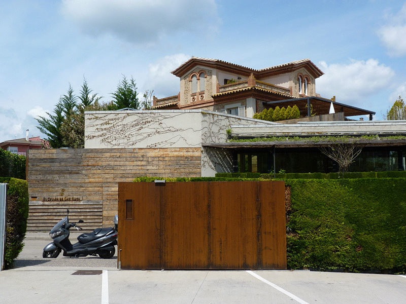

PATRI REALTY · PRÉVIA EDITORIAL · APURAÇÃO 22/10/2026 · NÃO PUBLICADO EM PRODUÇÃO
El Celler de Can Roca: três Estrelas Michelin em Girona
A casa dos irmãos Roca reúne cozinha, vinho e confeitaria em Girona. Conheça seu perfil e os cuidados para organizar uma reserva gastronômica.

Três especialidades em um mesmo endereço
A ficha do Michelin apresenta o restaurante na Carrer de Can Sunyer e destaca a complementaridade do trabalho dos irmãos Roca. O site oficial é a referência para a identidade da casa e seus canais de contato. A distinção gastronômica sustenta esta escolha editorial, sem criar uma posição em ranking mundial. [1][2]
Nossa leitura é que a relação entre cozinha, vinho e sobremesas pode orientar as perguntas de quem planeja a experiência. Vale discutir previamente o interesse do grupo, inclusive quando alguém não consome bebidas alcoólicas.
Girona pede uma logística própria
Não confunda o restaurante com um endereço em Barcelona nem com outros negócios ligados ao mesmo grupo. Use o nome completo e o endereço da confirmação para planejar transporte e chegada. Uma marca conhecida pode ter mais de uma operação, com propostas e reservas distintas.
Como orientação de viagem, recomendamos deixar margem entre deslocamentos e compromissos. Confirme com o canal oficial o formato de atendimento na data pretendida, os horários aplicáveis e as condições para alterações. Não apresentamos tempo universal de espera ou disponibilidade em tempo real.
O que perguntar antes de escolher o percurso
Peça informações sobre a proposta de menu vigente, possibilidades para restrições alimentares e opções de bebidas. Se houver harmonização, confirme o que está incluído e como ela se relaciona com o menu escolhido. Estes são pontos de planejamento, não uma descrição de itens garantidos em toda reserva.
A pesquisa documental permite contextualizar o endereço e sua distinção. Não permite à Patri Realty atribuir uma nota própria ao serviço ou às preparações. O leitor encontrará aqui uma curadoria e um roteiro de verificação, sem resenha presencial inventada.
Uma reserva organizada preserva a experiência
Confira quantidade de pessoas, contato para mudanças, pagamento e política vigente. Avise necessidades com antecedência e aguarde resposta, em vez de presumir adaptação automática. Mantenha a confirmação acessível durante a viagem.
A fotografia do exterior foi feita em 2012. É um registro de arquivo usado para identificar o restaurante, não uma imagem atual do salão ou do menu. A ficha Michelin e o site da casa estão vinculados para conferência direta.
Perguntas frequentes
O El Celler de Can Roca fica em Barcelona?
Não. O restaurante fica em Girona, na Catalunha. Planeje o deslocamento usando o endereço da confirmação.
Qual é a participação dos irmãos Roca?
A casa associa Joan à cozinha, Josep ao vinho e Jordi às sobremesas, conforme as fontes oficiais consultadas.
A reserva de outro negócio dos Roca vale para esta casa?
Não presuma equivalência. Confirme nome completo, endereço e serviço contratado no documento de reserva.
Verbetes
- Harmonização
- Seleção de bebidas proposta para acompanhar um percurso gastronômico; escopo e preço precisam ser confirmados.
- Sommelier
- Profissional ligado à seleção e ao serviço de bebidas, especialmente vinhos.
- Percurso gastronômico
- Sequência organizada de preparações; não é uma categoria de distinção Michelin.
Fontes consultadas
- Michelin — El Celler de Can Roca
- El Celler de Can Roca — site oficial
- Michelin — lista da Espanha 2026
Continue a leitura
- Guia Michelin: seis endereços para uma viagem de alto padrão
- Osteria Francescana: três Estrelas Michelin em Modena
- Le Louis XV: três Estrelas Michelin em Mônaco
Kit de publicação
- Título SEO
- El Celler de Can Roca: três Estrelas em Girona
- Meta description
- A casa dos irmãos Roca reúne cozinha, vinho e confeitaria em Girona. Conheça seu perfil e os cuidados para organizar uma reserva gastronômica.
- Legenda social
- Cozinha, vinho e sobremesas em um mesmo projeto familiar. O El Celler de Can Roca integra nossa curadoria de três Estrelas Michelin. Veja o perfil da casa e como organizar a visita a Girona.